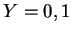
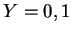
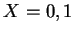

We seek an asymptotic solution of this problem for large vertical aspect ratio.
In the limit
 , equations
(4.7)-(4.10) and
(4.12)
become
, equations
(4.7)-(4.10) and
(4.12)
become
The vertical and spanwise derivatives of  ,
,  ,
,  and
and  have
dropped out of the elliptic field equations
(4.14)-(4.17). This means
that the boundary conditions at the floor and ceiling and front and
back walls must be abandoned. This is entirely analogous to the
situation for the tangential velocity component in slightly viscous
flow over a nonslip surface (Van Dyke 1964, ch. 7). It
means that unless the solution fortuitously matches these conditions
(without their being enforced) there will be regions of nonuniformity
in the neighbourhoods of  and
have
dropped out of the elliptic field equations
(4.14)-(4.17). This means
that the boundary conditions at the floor and ceiling and front and
back walls must be abandoned. This is entirely analogous to the
situation for the tangential velocity component in slightly viscous
flow over a nonslip surface (Van Dyke 1964, ch. 7). It
means that unless the solution fortuitously matches these conditions
(without their being enforced) there will be regions of nonuniformity
in the neighbourhoods of  and  .
.
At the remaining boundaries; the vertical walls ; apply constant
temperatures and vapour mass fractions and the
transpiration (2.59) and
no-slip boundary conditions:
The equation set above, (4.13)-(4.17), subject to (4.18)-(4.21), will apply for the mid-section of the cavity, sufficiently far away from the floor and ceiling and front and back walls. The precise meaning of this statement must await the solution of the ceiling and floor problems in chapter 5, and the front and back wall problems in chapter 7.